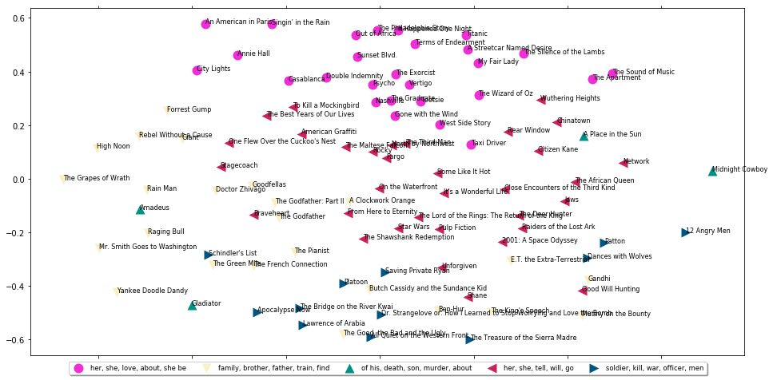
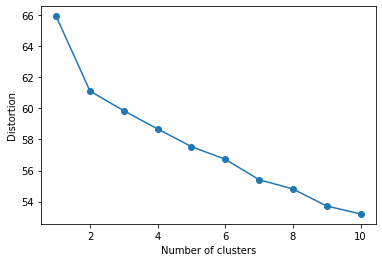

##ex16_1 导入依赖包,更新停用词表
import os
os.chdir(r'C:\Users\43790\python projects\《数据挖掘》') ##contractions.py放至此目录
from contractions import CONTRACTION_MAP
import re
import nltk
import string
from nltk.stem import WordNetLemmatizer
import unicodedata
stopword_list = nltk.corpus.stopwords.words('english')
stopword_list = stopword_list + ['mr', 'mrs', 'come', 'go', 'get',
'tell', 'listen', 'one', 'two', 'three',
'four', 'five', 'six', 'seven', 'eight',
'nine', 'zero', 'join', 'find', 'make',
'say', 'ask', 'tell', 'see', 'try', 'back',
'also']
wnl = WordNetLemmatizer()
## 定义分词函数
def tokenize_text(text):
tokens = nltk.word_tokenize(text)
tokens = [token.strip() for token in tokens]
return tokens
## ex16_2 扩展缩写词
def expand_contractions(text, contraction_mapping):
contractions_pattern = re.compile('({})'.format('|'.join(contraction_mapping.keys())),
flags=re.IGNORECASE|re.DOTALL)
def expand_match(contraction):
match = contraction.group(0)
first_char = match[0]
expanded_contraction = contraction_mapping.get(match)\
if contraction_mapping.get(match)\
else contraction_mapping.get(match.lower())
expanded_contraction = first_char+expanded_contraction[1:]
return expanded_contraction
expanded_text = contractions_pattern.sub(expand_match, text)
expanded_text = re.sub("'", "", expanded_text)
return expanded_text
## ex16_3 词形还原
from pattern.en import tag
from nltk.corpus import wordnet as wn
# Annotate text tokens with POS tags
def pos_tag_text(text):
def penn_to_wn_tags(pos_tag):
if pos_tag.startswith('J'):
return wn.ADJ
elif pos_tag.startswith('V'):
return wn.VERB
elif pos_tag.startswith('N'):
return wn.NOUN
elif pos_tag.startswith('R'):
return wn.ADV
else:
return None
tagged_text = tag(text)
tagged_lower_text = [(word.lower(), penn_to_wn_tags(pos_tag))
for word, pos_tag in
tagged_text]
return tagged_lower_text
# lemmatize text based on POS tags
def lemmatize_text(text):
pos_tagged_text = pos_tag_text(text)
lemmatized_tokens = [wnl.lemmatize(word, pos_tag) if pos_tag
else word
for word, pos_tag in pos_tagged_text]
lemmatized_text = ' '.join(lemmatized_tokens)
return lemmatized_text
## ex16_4去除特殊字符、停用词、提取文本标识
def remove_special_characters(text):
tokens = tokenize_text(text)
pattern = re.compile('[{}]'.format(re.escape(string.punctuation)))
filtered_tokens = filter(None, [pattern.sub(' ', token) for token in tokens])
filtered_text = ' '.join(filtered_tokens)
return filtered_text
def remove_stopwords(text):
tokens = tokenize_text(text)
filtered_tokens = [token for token in tokens if token not in stopword_list]
filtered_text = ' '.join(filtered_tokens)
return filtered_text
def keep_text_characters(text):
filtered_tokens = []
tokens = tokenize_text(text)
for token in tokens:
if re.search('[a-zA-Z]', token):
filtered_tokens.append(token)
filtered_text = ' '.join(filtered_tokens)
return filtered_text
## ex16_5 将所有预处理步骤集成
def normalize_corpus(corpus, lemmatize=True,
only_text_chars=False,
tokenize=False):
normalized_corpus = []
for text in corpus:
text = expand_contractions(text, CONTRACTION_MAP) ##扩展缩写词
if lemmatize:
text = lemmatize_text(text) ##词性还原
else:
text = text.lower()
text = remove_special_characters(text) ##去除标点
text = remove_stopwords(text) ##去除停用词
if only_text_chars:
text = keep_text_characters(text) ##仅保留英文字符
if tokenize:
text = tokenize_text(text) ##分词
normalized_corpus.append(text)
else:
normalized_corpus.append(text)
return normalized_corpusimport numpy as np
## 包含9个文档的原始语料库
toy_corpus = ['The sky is blue',
'The sky is blue and beautiful',
'Look at the bright blue sky!',
'Python is a great Programming language',
'Python and Java are popular Programming languages',
'Among Programming languages, both Python and Java are the most used in Analytics',
'The fox is quicker than the lazy dog',
'The dog is smarter than the fox',
'The dog, fox and cat are good friends']
## 包含3个文档的查询语料，对每个文档，从toy_corpus中找到最相似的一个
query_docs = ['The fox is definitely smarter than the dog',
'Java is a static typed programming language unlike Python',
'I love to relax under the beautiful blue sky!']
## 规范化原始语料库
norm_corpus = normalize_corpus(toy_corpus, lemmatize=True) ##需运行ex16_1~ ex16_5
print(norm_corpus)
## 规范化查询语料
norm_query_docs = normalize_corpus(query_docs,lemmatize=True)
print(norm_query_docs)
['the sky be blue', 'the sky be blue and beautiful', 'look at the bright blue sky !', 'python be a great programming language', 'python and java be popular programming language', 'among programming language , both python and java be the most use in analytics', 'the fox be quick than the lazy dog', 'the dog be smarter than the fox', 'the dog , fox and cat be good friend']
['the fox be definitely smarter than the dog', 'java be a static type programming language unlike python', 'i love to relax under the beautiful blue sky !']## ex16_7 定义文档向量提取函数
from sklearn.feature_extraction.text import CountVectorizer, TfidfVectorizer
## 定义如下函数，从文档中提取特征，可提取布尔特征、频率特征、tfidf特征
def build_feature_matrix(documents, feature_type='frequency',
ngram_range=(1, 1), min_df=0.0, max_df=1.0):
feature_type = feature_type.lower().strip()
if feature_type == 'binary':
vectorizer = CountVectorizer(binary=True, min_df=min_df,
max_df=max_df, ngram_range=ngram_range)
elif feature_type == 'frequency':
vectorizer = CountVectorizer(binary=False, min_df=min_df,
max_df=max_df, ngram_range=ngram_range)
elif feature_type == 'tfidf':
vectorizer = TfidfVectorizer(min_df=min_df, max_df=max_df,
ngram_range=ngram_range)
else:
raise Exception("Wrong feature type entered. Possible values: 'binary', 'frequency', 'tfidf'")
feature_matrix = vectorizer.fit_transform(documents).astype(float)
return vectorizer, feature_matrix
## ex16_8 将原始语料转换为特征向量，即提取原始语料的tfidf特征
tfidf_vectorizer, tfidf_features = build_feature_matrix(norm_corpus, feature_type='tfidf',\
ngram_range=(1,1),min_df=0.0, max_df=1.0)
print('norm_corpus tfidf feaures:')
print(tfidf_features.toarray()) ## 压缩矩阵转化为稀疏矩阵
## 将查询语料转换为特征向量，即提取查询语料的tfidf特征
query_docs_tfidf = tfidf_vectorizer.transform(norm_query_docs)
print('norm_query_docs tfidf features:')
print(query_docs_tfidf.toarray())
norm_corpus tfidf feaures:
[[0. 0. 0. 0. 0.34846291 0.
0.6041072 0. 0. 0. 0. 0.
0. 0. 0. 0. 0. 0.
0. 0. 0. 0. 0. 0.
0. 0.6041072 0. 0. 0.3855938 0. ]
[0. 0. 0.38110217 0. 0.24880016 0.58734555
0.43132846 0. 0. 0. 0. 0.
0. 0. 0. 0. 0. 0.
0. 0. 0. 0. 0. 0.
0. 0.43132846 0. 0. 0.27531137 0. ]
[0. 0. 0. 0.48233752 0. 0.
0.3542138 0. 0.48233752 0. 0. 0.
0. 0. 0. 0. 0. 0.
0. 0.48233752 0. 0. 0. 0.
0. 0.3542138 0. 0. 0.22609008 0. ]
[0. 0. 0. 0. 0.25327071 0.
0. 0. 0. 0. 0. 0.
0. 0. 0.59789923 0. 0. 0.43907875
0. 0. 0. 0. 0.43907875 0.43907875
0. 0. 0. 0. 0. 0. ]
[0. 0. 0.32723247 0. 0.21363167 0.
0. 0. 0. 0. 0. 0.
0. 0. 0. 0. 0.42595911 0.37035915
0. 0. 0. 0.50432286 0.37035915 0.37035915
0. 0. 0. 0. 0. 0. ]
[0.33056385 0.33056385 0.21448805 0. 0.14002718 0.
0. 0.33056385 0. 0. 0. 0.
0. 0. 0. 0.33056385 0.27919949 0.2427559
0. 0. 0.33056385 0. 0.2427559 0.2427559
0. 0. 0. 0. 0.15494795 0.33056385]
[0. 0. 0. 0. 0.1923419 0.
0. 0. 0. 0. 0.33345049 0.33345049
0. 0. 0. 0. 0. 0.
0.45406386 0. 0. 0. 0. 0.
0.45406386 0. 0. 0.38350956 0.42567426 0. ]
[0. 0. 0. 0. 0.21587942 0.
0. 0. 0. 0. 0.37425594 0.37425594
0. 0. 0. 0. 0. 0.
0. 0. 0. 0. 0. 0.
0. 0. 0.50962916 0.4304409 0.47776543 0. ]
[0. 0. 0.29315989 0. 0.1913876 0.
0. 0. 0. 0.45181101 0.33179607 0.33179607
0.45181101 0.45181101 0. 0. 0. 0.
0. 0. 0. 0. 0. 0.
0. 0. 0. 0. 0.21178113 0. ]]
norm_query_docs tfidf features:
[[0. 0. 0. 0. 0.21587942 0.
0. 0. 0. 0. 0.37425594 0.37425594
0. 0. 0. 0. 0. 0.
0. 0. 0. 0. 0. 0.
0. 0. 0.50962916 0.4304409 0.47776543 0. ]
[0. 0. 0. 0. 0.26733688 0.
0. 0. 0. 0. 0. 0.
0. 0. 0. 0. 0.53304166 0.46346434
0. 0. 0. 0. 0.46346434 0.46346434
0. 0. 0. 0. 0. 0. ]
[0. 0. 0. 0. 0. 0.65962261
0.4844065 0. 0. 0. 0. 0.
0. 0. 0. 0. 0. 0.
0. 0. 0. 0. 0. 0.
0. 0.4844065 0. 0. 0.30919039 0. ]]## ex16_9 利用余弦相似度，返回与查询文档相似度最高的n个文档
from sklearn.metrics.pairwise import cosine_similarity
print('Document Similarity Analysis using Cosine Similarity')
print('='*60)
for index, doc in enumerate(query_docs):
doc_tfidf = query_docs_tfidf[index]
similarity = cosine_similarity(doc_tfidf, tfidf_features)[0]
print(similarity)
top_docs = similarity.argsort()[::-1][:2]
# print(top_docs)
top_docs_with_score = [(index, round(similarity[index],3)) for index in top_docs]
print('Document',index+1, ':', doc)
print('Top', len(top_docs), 'similar docs:')
print('-'*40)
for doc_index, sim_score in top_docs_with_score:
print('Doc num:{} Similarity Score:{}\nDoc:{}'.format(doc_index+1, sim_score, toy_corpus[doc_index]))
print('-'*40)
print()
Document Similarity Analysis using Cosine Similarity
============================================================
---------------------------------------------------------------------------
NameError Traceback (most recent call last)
<ipython-input-1-9b1754fc3fc1> in <module>
5 print('='*60)
6
----> 7 for index, doc in enumerate(query_docs):
8 doc_tfidf = query_docs_tfidf[index]
9 similarity = cosine_similarity(doc_tfidf, tfidf_features)[0]
NameError: name 'query_docs' is not defined## ex16_10 基于HB距离，从语料库中获取n个与查询文档最相似的文档
def compute_HB_distance(doc_features, corpus_features, top_n=3):
# get document vectors
doc_features = doc_features.toarray()[0]
corpus_features = corpus_features.toarray()
# compute hb distances
distance = np.sqrt(0.5 * np.sum(np.square(np.sqrt(doc_features) -
np.sqrt(corpus_features)), axis=1))
# get docs with lowest distance scores
top_docs = distance.argsort()[:top_n] ##分布之间的距离度量，距离从小到大排序，得分为0表示完全相似
top_docs_with_score = [(index, round(distance[index], 3))
for index in top_docs]
return top_docs_with_score
## 距离计算
print('Document Similarity Analysis using Hellinger-Bhattacharya distance')
print('='*60)
for index, doc in enumerate(query_docs):
doc_tfidf = query_docs_tfidf[index]
top_similar_docs = compute_HB_distance(doc_tfidf, tfidf_features,top_n=2)
print('Document',index+1 ,':', doc)
print('Top', len(top_similar_docs), 'similar docs:')
print('-'*40)
for doc_index, sim_score in top_similar_docs:
print('Doc num: {} Distance Score: {}\nDoc: {}'.format(doc_index+1,
sim_score,
toy_corpus[doc_index]))
print('-'*40)
print()Document Similarity Analysis using Hellinger-Bhattacharya distance
============================================================
Document 1 : The fox is definitely smarter than the dog
Top 2 similar docs:
----------------------------------------
Doc num: 8 Distance Score: 0.0
Doc: The dog is smarter than the fox
----------------------------------------
Doc num: 7 Distance Score: 0.844
Doc: The fox is quicker than the lazy dog
----------------------------------------
Document 2 : Java is a static typed programming language unlike Python
Top 2 similar docs:
----------------------------------------
Doc num: 5 Distance Score: 0.654
Doc: Python and Java are popular Programming languages
----------------------------------------
Doc num: 4 Distance Score: 0.752
Doc: Python is a great Programming language
----------------------------------------
Document 3 : I love to relax under the beautiful blue sky!
Top 2 similar docs:
----------------------------------------
Doc num: 2 Distance Score: 0.564
Doc: The sky is blue and beautiful
----------------------------------------
Doc num: 1 Distance Score: 0.716
Doc: The sky is blue
----------------------------------------import os
import pandas as pd
import numpy as np
os.chdir(r'C:/Users/43790/data file')
movie_data = pd.read_csv('movie_data.csv')
# print(movie_data.head())
movie_titles = movie_data['Title']
movie_synopses = movie_data['Synopsis']
print('Movie',movie_titles[0])
print('Movie Synopsis', movie_synopses[0][:1000])
Movie The Godfather
Movie Synopsis In late summer 1945, guests are gathered for the wedding reception of Don Vito Corleone's daughter Connie (Talia Shire) and Carlo Rizzi (Gianni Russo). Vito (Marlon Brando), the head of the Corleone Mafia family, is known to friends and associates as "Godfather." He and Tom Hagen (Robert Duvall), the Corleone family lawyer, are hearing requests for favors because, according to Italian tradition, "no Sicilian can refuse a request on his daughter's wedding day." One of the men who asks the Don for a favor is Amerigo Bonasera, a successful mortician and acquaintance of the Don, whose daughter was brutally beaten by two young men because she refused their advances; the men received minimal punishment. The Don is disappointed in Bonasera, who'd avoided most contact with the Don due to Corleone's nefarious business dealings. The Don's wife is godmother to Bonasera's shamed daughter, a relationship the Don uses to extract new loyalty from the undertaker. The Don agrees to have his men punish ##文本规范化
norm_movie_synopses = normalize_corpus(movie_synopses, lemmatize=True, only_text_chars=True)
# ## 提取tf-idf的一元分词和二元分词特征
## 每个特征至少在25%的文档中出现，至多在85%的文档中出现
vectorizer, feature_matrix = build_feature_matrix(norm_movie_synopses, feature_type='tfidf', min_df=0.24,max_df=0.85, ngram_range=(1,2))
print(feature_matrix) ## csr_matrix
print(feature_matrix.shape) ## 原始矩阵，100*307 提取了307个特征
# get feature name
feature_names = vectorizer.get_feature_names()
print(feature_names[:20])
print(len(feature_names))
(0, 245) 0.019212339105980844
(0, 244) 0.014058482888994648
(0, 255) 0.016463737903316754
(0, 225) 0.01490542083529085
(0, 573) 0.01951226744996299
(0, 240) 0.018642322542943058
(0, 484) 0.018922579806325012
(0, 237) 0.0176050414984765
(0, 352) 0.017852800316818917
(0, 551) 0.015649114100419182
(0, 254) 0.01490542083529085
(0, 421) 0.020145674272034193
(0, 78) 0.020145674272034193
(0, 514) 0.016046724430450594
(0, 20) 0.06043702281610258
(0, 61) 0.01690214583228003
(0, 72) 0.01951226744996299
(0, 589) 0.01545703678681262
(0, 26) 0.018642322542943058
(0, 503) 0.012717937620422403
(0, 481) 0.0166801312525218
(0, 77) 0.037845159612650024
(0, 499) 0.01951226744996299
(0, 230) 0.020145674272034193
(0, 469) 0.01810795600342744
: :
(99, 63) 0.051305686365200345
(99, 160) 0.21182600776815871
(99, 319) 0.0567693710391131
(99, 580) 0.055621265504843094
(99, 124) 0.05977730538786259
(99, 22) 0.06648706707638062
(99, 351) 0.06436507985396142
(99, 516) 0.05505820594286933
(99, 182) 0.2458274974654437
(99, 423) 0.0799330814115007
(99, 498) 0.052345724418053845
(99, 283) 0.4036156953269401
(99, 302) 0.05977730538786259
(99, 178) 0.0819424991551479
(99, 564) 0.08513904186902038
(99, 600) 0.09500189264390897
(99, 412) 0.05505820594286933
(99, 406) 0.09232230995044544
(99, 606) 0.0761691422296135
(99, 57) 0.062340317698467464
(99, 137) 0.11955461077572518
(99, 111) 0.05450222907907284
(99, 345) 0.058549460380619964
(99, 290) 0.12208047277703582
(99, 176) 0.0799330814115007
(100, 607)
['able', 'able to', 'about', 'about his', 'about the', 'about to', 'accept', 'across', 'act', 'after the', 'again', 'against', 'agree', 'agree to', 'alive', 'all', 'all the', 'allow', 'alone', 'along']
607## ex16_13 使用k-means算法聚类电影评论
from sklearn.cluster import KMeans
def k_means(feature_matrix, num_clusters=5):
km = KMeans(n_clusters=num_clusters, max_iter=1000)
km.fit(feature_matrix)
clusters = km.labels_
return km, clusters ##clusters中得到为每个样本点分配的聚类标签
##将100部电影简介聚类成5类
num_clusters = 5
km_obj, clusters = k_means(feature_matrix=feature_matrix, num_clusters=num_clusters) ## 得到聚类对象和聚类标签
movie_data['Cluster']=clusters
from collections import Counter
c = Counter(clusters)
print(c.items()) ##聚类类别统计
dict_items([(1, 24), (3, 33), (4, 12), (0, 27), (2, 4)])## ex16_14 从聚类模型中提取详细的聚类分析信息
def get_cluster_data(clustering_obj, movie_data, feature_names, num_clusters, topn_features=10):
cluster_details = {}
##获取质心，得到按降序排序的分量索引
ordered_centroids = clustering_obj.cluster_centers_.argsort()[:,::-1] ##5行307列
## 获取每一个类的关键特征
for cluster_num in range(num_clusters):
cluster_details[cluster_num] = {}
cluster_details[cluster_num]['cluster_num'] = cluster_num
key_features = [feature_names[index] for index in ordered_centroids[cluster_num,:topn_features]]
cluster_details[cluster_num]['key_features'] = key_features
## 获取每个聚类的电影标题
movies = movie_data[movie_data['Cluster']==cluster_num]['Title'].values.tolist()
cluster_details[cluster_num]['movies'] = movies
return cluster_details
## 定义一个能清晰展示结果的函数
def print_cluster_data(cluster_data):
##打印cluster_datails中的结果
for cluster_num, cluster_details in cluster_data.items():
print('Cluster {} details'.format(cluster_num))
print('-'*20)
print('key features:', cluster_details['key_features'])
print('Movie in this cluster:')
print(','.join(cluster_details['movies']))
print('='*40)
## ex16_15 聚类可视化
import matplotlib.pyplot as plt
from sklearn.manifold import MDS
from sklearn.metrics.pairwise import cosine_similarity
import random
from matplotlib.font_manager import FontProperties
def plot_clusters(num_clusters, feature_matrix,
cluster_data, movie_data,
plot_size=(16,8)):
# 为每个类产生随机颜色
def generate_random_color():
color = '#%06x' % random.randint(0, 0xFFFFFF)
return color
# 为每个类别样本设定显示形状
markers = ['o', 'v', '^', '<', '>', '8', 's', 'p', '*', 'h', 'H', 'D', 'd']
# 构建余弦相似度矩阵
cosine_distance = 1 - cosine_similarity(feature_matrix)
# 使用MDS进行特征降维
mds = MDS(n_components=2, dissimilarity="precomputed", random_state=1)
# 获取低维空间的坐标轴
plot_positions = mds.fit_transform(cosine_distance)
x_pos, y_pos = plot_positions[:, 0], plot_positions[:, 1]
# build cluster plotting data
cluster_color_map = {}
cluster_name_map = {}
for cluster_num, cluster_details in cluster_data.items():
# assign cluster features to unique label
cluster_color_map[cluster_num] = generate_random_color()
cluster_name_map[cluster_num] = ', '.join(cluster_details['key_features'][:5]).strip()
# map each unique cluster label with its coordinates and movies
cluster_plot_frame = pd.DataFrame({'x': x_pos,
'y': y_pos,
'label': movie_data['Cluster'].values.tolist(),
'title': movie_data['Title'].values.tolist()
})
grouped_plot_frame = cluster_plot_frame.groupby('label')
# set plot figure size and axes
fig, ax = plt.subplots(figsize=plot_size)
ax.margins(0.05)
# plot each cluster using co-ordinates and movie titles
for cluster_num, cluster_frame in grouped_plot_frame:
marker = markers[cluster_num] if cluster_num < len(markers) \
else np.random.choice(markers, size=1)[0]
ax.plot(cluster_frame['x'], cluster_frame['y'],
marker=marker, linestyle='', ms=12,
label=cluster_name_map[cluster_num],
color=cluster_color_map[cluster_num], mec='none')
ax.set_aspect('auto')
ax.tick_params(axis= 'x', which='both', bottom='off', top='off',
labelbottom='off')
ax.tick_params(axis= 'y', which='both', left='off', top='off',
labelleft='off')
fontP = FontProperties()
fontP.set_size('small')
ax.legend(loc='upper center', bbox_to_anchor=(0.5, -0.01), fancybox=True,
shadow=True, ncol=5, numpoints=1, prop=fontP)
#add labels as the film titles
for index in range(len(cluster_plot_frame)):
ax.text(cluster_plot_frame.ix[index]['x'],
cluster_plot_frame.ix[index]['y'],
cluster_plot_frame.ix[index]['title'], size=8)
# show the plot
plt.show()
## 在电影简介上显示
cluster_data = get_cluster_data(clustering_obj=km_obj,
movie_data=movie_data,
feature_names=feature_names,
num_clusters=num_clusters,
topn_features=5)
print_cluster_data(cluster_data)
plot_clusters(num_clusters=num_clusters,
feature_matrix=feature_matrix,
cluster_data=cluster_data,
movie_data=movie_data,
plot_size=(16,8))
Cluster 0 details
--------------------
key features: ['her', 'she', 'love', 'about', 'she be']
Movie in this cluster:
Casablanca,Gone with the Wind,The Wizard of Oz,Titanic,Psycho,Sunset Blvd.,Vertigo,The Sound of Music,West Side Story,The Silence of the Lambs,Singin' in the Rain,A Streetcar Named Desire,The Philadelphia Story,An American in Paris,My Fair Lady,The Apartment,The Exorcist,City Lights,It Happened One Night,Annie Hall,Out of Africa,Terms of Endearment,Tootsie,Nashville,The Graduate,Taxi Driver,Double Indemnity
========================================
Cluster 1 details
--------------------
key features: ['family', 'brother', 'father', 'train', 'find']
Movie in this cluster:
The Godfather,Raging Bull,The Godfather: Part II,Forrest Gump,E.T. the Extra-Terrestrial,Gandhi,Ben-Hur,Doctor Zhivago,The Good, the Bad and the Ugly,Butch Cassidy and the Sundance Kid,High Noon,The Pianist,Goodfellas,The French Connection,The King's Speech,Mr. Smith Goes to Washington,Rain Man,Giant,The Grapes of Wrath,The Green Mile,Mutiny on the Bounty,A Clockwork Orange,Rebel Without a Cause,Yankee Doodle Dandy
========================================
Cluster 2 details
--------------------
key features: ['of his', 'death', 'son', 'murder', 'about']
Movie in this cluster:
Amadeus,Gladiator,A Place in the Sun,Midnight Cowboy
========================================
Cluster 3 details
--------------------
key features: ['her', 'she', 'tell', 'will', 'go']
Movie in this cluster:
The Shawshank Redemption,One Flew Over the Cuckoo's Nest,Citizen Kane,On the Waterfront,Star Wars,2001: A Space Odyssey,Chinatown,It's a Wonderful Life,Some Like It Hot,The Lord of the Rings: The Return of the King,From Here to Eternity,Unforgiven,Raiders of the Lost Ark,Rocky,To Kill a Mockingbird,The Best Years of Our Lives,Jaws,Braveheart,The Deer Hunter,Good Will Hunting,Fargo,Shane,Close Encounters of the Third Kind,Network,American Graffiti,Pulp Fiction,The African Queen,Stagecoach,The Maltese Falcon,Wuthering Heights,Rear Window,The Third Man,North by Northwest
========================================
Cluster 4 details
--------------------
key features: ['soldier', 'kill', 'war', 'officer', 'men']
Movie in this cluster:
Schindler's List,Lawrence of Arabia,The Bridge on the River Kwai,12 Angry Men,Dr. Strangelove or: How I Learned to Stop Worrying and Love the Bomb,Apocalypse Now,Saving Private Ryan,Patton,The Treasure of the Sierra Madre,Platoon,Dances with Wolves,All Quiet on the Western Front
========================================
C:\Users\43790\Anaconda3\lib\site-packages\ipykernel_launcher.py:60: FutureWarning:
.ix is deprecated. Please use
.loc for label based indexing or
.iloc for positional indexing
See the documentation here:
http://pandas.pydata.org/pandas-docs/stable/user_guide/indexing.html#ix-indexer-is-deprecated
C:\Users\43790\Anaconda3\lib\site-packages\ipykernel_launcher.py:61: FutureWarning:
.ix is deprecated. Please use
.loc for label based indexing or
.iloc for positional indexing
See the documentation here:
http://pandas.pydata.org/pandas-docs/stable/user_guide/indexing.html#ix-indexer-is-deprecated
C:\Users\43790\Anaconda3\lib\site-packages\ipykernel_launcher.py:62: FutureWarning:
.ix is deprecated. Please use
.loc for label based indexing or
.iloc for positional indexing
See the documentation here:
http://pandas.pydata.org/pandas-docs/stable/user_guide/indexing.html#ix-indexer-is-deprecated
## ex16_16
distortions = []
for i in range(1,11):
km = KMeans(n_clusters=i, init='k-means++',max_iter=1000)
km.fit(feature_matrix)
distortions.append(km.inertia_)
plt.plot(range(1,11), distortions, marker='o')
plt.xlabel('Number of clusters')
plt.ylabel('Distortion')
plt.show()
